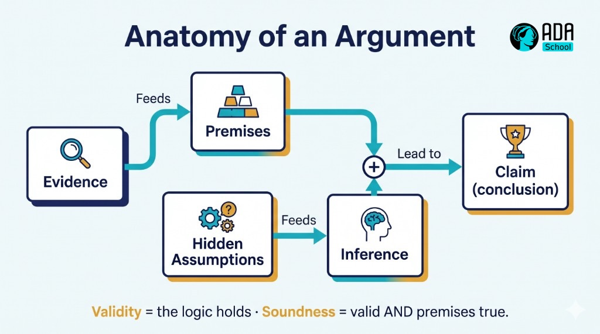
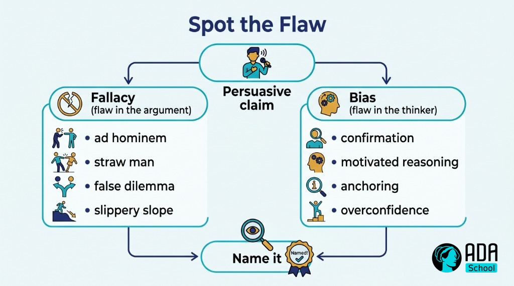
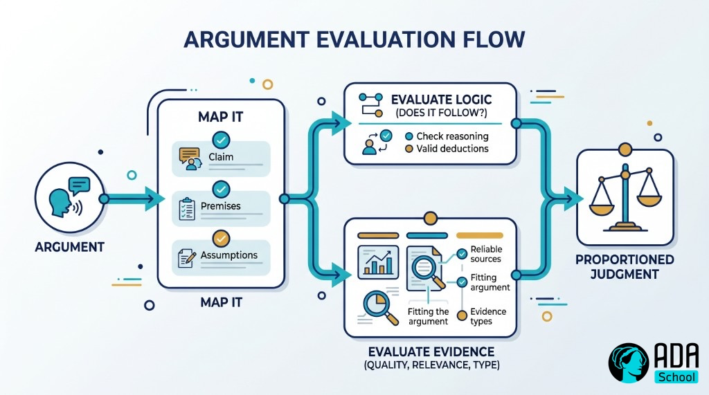
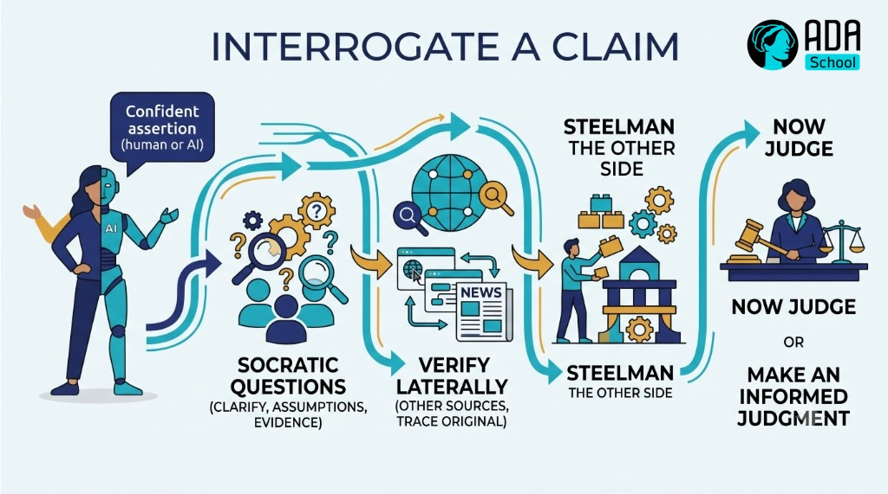
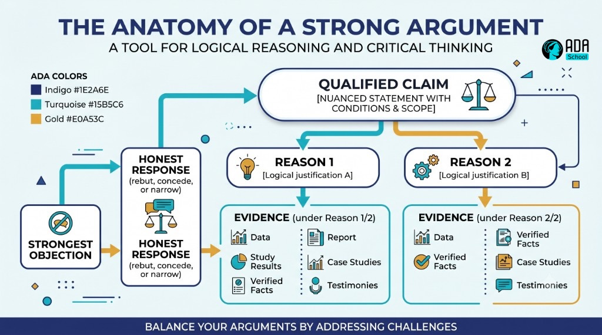

🧠 Worked Example — Critical Thinking Micro-Credential (full course)
A complete, ready-to-run ADA micro-credential for one of the most valuable — and most-claimed, least-taught — competencies of the AI era: thinking critically. It is a fully populated example built end-to-end with the ADA Methodology (KSA + 4 phases + learning-atom topology): every atom has real reading text, curated videos, Mermaid diagrams, image-generation prompts, hands-on drills, and rubrics.
🖥️ See it live: open course.html in any browser for an interactive, navigable version of this course (sidebar, progress, embedded videos, diagrams, copyable prompts).
Critical thinking is a cognitive skill that spans the full KSA spectrum: a small Knowledge base (the anatomy of reasoning; fallacies & biases), three core Skills (evaluate arguments & evidence, question & verify, and construct & defend a reasoned argument), and the durable Abilities that power them (intellectual humility and a curious, skeptical stance). It pairs naturally with Problem Solving (where you apply the reasoning) and Self-Learning (where you judge sources and AI output).
Conforms to ../../specs/micro-credential-v2-schema.md · modalities from ../../specs/learning-atom-topology.md · KSA from ../../specs/ksa-taxonomy.md.
🧭 What this teaches
In a world flooded with content, confident AI answers, and persuasive nonsense, the ability to tell good reasoning from bad is a superpower. This course makes it concrete and certifiable: learners learn to deconstruct an argument (claims, premises, assumptions, inference), spot fallacies and biases, evaluate evidence and sources, ask sharp questions, and build and defend a well-reasoned position — finishing by reasoning through a real, contested issue and defending their conclusion.
| Title | Critical Thinking: Reason, Evaluate & Judge |
| Duration | ~12 hours · 2–3 weeks |
| Primary KSA | 🛠️ Skill — evaluate arguments & evidence and question & verify, plus the 🌱 Abilities that sustain them |
| Target competency | O*NET process skills: Critical Thinking (2.A.2.a), Active Learning (2.A.2.a), Judgment & Decision Making (2.B.4.e) · ESCO transversal "think critically", "think analytically" |
| Badge | 🏅 Critical Thinker |
| Prerequisites | None. A contested topic or claim you care about helps for practice. |
📚 Course contents
| # | File | What it is |
|---|---|---|
| — | micro-credential.md | The full micro-credential spec (YAML schema, objectives, KSA map, phase planner) |
| 1 | atoms/atom-1-what-is-critical-thinking.md | 🙉 P1 · 🧠 K — What critical thinking is (claims, arguments, standards) |
| 2 | atoms/atom-2-fallacies-and-biases.md | 🙉 P1 · 🧠 K — Logical fallacies & reasoning biases (how thinking fails) |
| 3 | atoms/atom-3-evaluate-arguments-and-evidence.md | 🙈 P2 · 🛠️ S — Evaluate arguments & evidence (deconstruct + judge) |
| 4 | atoms/atom-4-question-and-verify.md | 🙊 P3 · 🛠️ S — Question & verify (Socratic questions · sources · steelmanning) |
| 5 | atoms/atom-5-build-and-defend-an-argument.md | 🙊 P3 · 🛠️ S + 🌱 A — Build & defend a reasoned argument |
| 6 | atoms/atom-6-capstone-reason-through-a-real-issue.md | 🐵 P4 · 🛠️ S + 🌱 A — Capstone: reason through a real issue + peer review |
| — | capstone.md | Capstone brief + how it maps to KSA |
| — | rubrics.md | All rubrics (knowledge-mini, skill, behavioral, capstone-5) |
| — | skills-map.md | Badge → skills map and how it boosts almost every role |
🤝 Practiced for real: the Abilities (intellectual humility, skeptical curiosity) are assessed behaviorally across ≥3 occasions (never a quiz), and the capstone ends in a defense + peer review.
🔄 Phase journey
🤖 How it was authored (and how to reuse it)
This course follows the Gen AI authoring workflow in ../../specs/genai-authoring-workflow.md: competency → KSA → atoms → modalities → rubrics → badge. Conventions used throughout:
- 🎬 Videos are written as a
youtubeblock with the real URL + caption (the interactive site
embeds them as a click-to-play player).
- 🖼️ Diagrams are provided two ways: a live Mermaid diagram and a reusable
image-generation prompt in a prompt block.
- ✅ Activities include argument-mapping worksheets, source audits, checklists, and rubrics so the
course is self-paced and practicable.
⚠️ Human-in-the-loop (methodology guardrail): the links and references below are curated starting points — a mentor/instructor should verify each one before delivery. The Abilities here require human/peer observation across occasions. See ../../CLAUDE.md §5.🎓 Micro-Credential — Critical Thinking: Reason, Evaluate & Judge
The full specification for this micro-credential. It conforms to ../../specs/micro-credential-v2-schema.md.
YAML front matter
yamlschema: ada-microcredential/v2
id: mc-critical-thinking
title: "Critical Thinking: Reason, Evaluate & Judge"
language: en
duration_hours: 12
level: beginner
status: published
license: CC-BY-SA-4.0
mentors: ["@sancarbar"]
target_roles:
- role: "Any role — critical thinking is a transversal, near-universal job requirement (analysts, ICs, leads, researchers, founders)"
framework_ref: >
O*NET process skills: 2.A.2.a Critical Thinking, 2.A.2.a Active Learning, 2.B.4.e Judgment and Decision Making ·
ESCO transversal: "think critically", "think analytically", "process information"
ksa:
- { id: K-reasoning, type: knowledge, label: "The anatomy of reasoning: claims, premises, assumptions, inference; validity vs. soundness; standards of good thinking (clarity, accuracy, relevance, logic, fairness)", target_level: 2, bloom: understand }
- { id: K-fallacies-biases, type: knowledge, label: "Common logical fallacies and reasoning biases that make thinking fail", target_level: 2, bloom: understand }
- { id: S-evaluate-arguments, type: skill, label: "Deconstruct and evaluate an argument and its evidence: identify claim/premises/assumptions, assess evidence quality and logical strength", target_level: 2, bloom: analyze, primary: true }
- { id: S-question-verify, type: skill, label: "Ask good questions and verify: Socratic questioning, source/credibility evaluation, steelmanning", target_level: 2, bloom: apply, primary: true }
- { id: S-construct-argument, type: skill, label: "Construct and defend a well-reasoned argument: claim → reasons → evidence → address counterarguments (argument mapping)", target_level: 2, bloom: create }
- { id: A-intellectual-humility, type: ability, label: "Intellectual humility & open-mindedness: willingness to be wrong, follow evidence, and revise beliefs", target_level: 2, affective_stage: value, assessed_occasions: 3 }
- { id: A-skepticism-curiosity, type: ability, label: "Skeptical curiosity: question claims and assumptions rather than accept them at face value", target_level: 2, affective_stage: respond, assessed_occasions: 3 }
atoms:
- { id: atom-1, title: "What critical thinking is", ksa_refs: [K-reasoning], phase: 1, modalities: [{dimension: read, subtype: Article}, {dimension: watch, subtype: Video Explainer}, {dimension: see, subtype: Mental Model}, {dimension: evaluate, subtype: Pop Quiz}], rubric: knowledge-mini }
- { id: atom-2, title: "Logical fallacies & reasoning biases", ksa_refs: [K-fallacies-biases], phase: 1, modalities: [{dimension: read, subtype: Article}, {dimension: watch, subtype: Video Explainer}, {dimension: see, subtype: Framework}, {dimension: evaluate, subtype: Pop Quiz}], rubric: knowledge-mini }
- { id: atom-3, title: "Evaluate arguments & evidence", ksa_refs: [S-evaluate-arguments], phase: 2, modalities: [{dimension: see, subtype: Diagram}, {dimension: practice, subtype: Worksheet / Exercise}, {dimension: practice, subtype: Case Study}, {dimension: evaluate, subtype: Performance Task}], rubric: skill }
- { id: atom-4, title: "Question & verify", ksa_refs: [S-question-verify], phase: 3, modalities: [{dimension: read, subtype: Technical Article}, {dimension: practice, subtype: Worksheet / Exercise}, {dimension: practice, subtype: AI Prompt Question}, {dimension: evaluate, subtype: Performance Task}], rubric: skill }
- { id: atom-5, title: "Build & defend a reasoned argument", ksa_refs: [S-construct-argument, A-intellectual-humility, A-skepticism-curiosity], phase: 3, modalities: [{dimension: practice, subtype: Essay / Writing}, {dimension: practice, subtype: Simulation}, {dimension: collaborate, subtype: Discussion Forum}, {dimension: evaluate, subtype: Behavioral Assessment}], rubric: behavioral }
- { id: atom-6, title: "Capstone: reason through a real issue", ksa_refs: [S-evaluate-arguments, S-question-verify, S-construct-argument, A-intellectual-humility, A-skepticism-curiosity], phase: 4, modalities: [{dimension: practice, subtype: Project / Quest}, {dimension: collaborate, subtype: Showcase / Demo Day}, {dimension: collaborate, subtype: Async Peer Review}, {dimension: evaluate, subtype: Capstone Project}], rubric: capstone-5 }
capstone:
title: "Take a real, contested claim or issue, evaluate the evidence on all sides, and defend a reasoned conclusion"
integrates_ksa: [K-reasoning, K-fallacies-biases, S-evaluate-arguments, S-question-verify, S-construct-argument, A-intellectual-humility, A-skepticism-curiosity]
rubric: capstone-5
badge:
name: "Critical Thinker"
evidence_required: ["atom-3", "atom-4", "atom-5", "capstone"]
issued_on: verified-evidence
🎯 Target job competency
Think critically. Employers want people who can cut through noise: evaluate claims, weigh evidence, spot flawed reasoning, ask the right questions, and reach a defensible conclusion — especially now that AI can produce fluent, confident, sometimes-wrong content at scale. It is one of the most-requested competencies across every function. Mapped to O*NET (Critical Thinking, Active Learning, Judgment & Decision Making) and ESCO transversal "think critically / analytically."
🧬 KSA breakdown — a cognitive skill, taught the right way
| KSA | Component | Why this type | Target |
|---|---|---|---|
| 🧠 Knowledge | The anatomy of reasoning | A mental model: claims, premises, inference, standards | L2 |
| 🧠 Knowledge | Fallacies & reasoning biases | You can't catch flaws you can't name | L2 |
| 🛠️ Skill | Evaluate arguments & evidence | A trainable technique (deconstruct + judge) | L2 |
| 🛠️ Skill | Question & verify | Socratic questioning + source evaluation | L2 |
| 🛠️ Skill | Build & defend an argument | Argument mapping; address counterarguments | L2 |
| 🌱 Ability | Intellectual humility | A disposition: willingness to be wrong & revise | L2 |
| 🌱 Ability | Skeptical curiosity | A habit of questioning before accepting | L2 |
Why this shape: critical thinking is mostly doing (Skills: evaluate, question, construct), but it only works when paired with the Abilities that drive it — intellectual humility (to follow evidence even against your own view) and skeptical curiosity (to question the obvious). Those Abilities are assessed behaviorally, across ≥3 occasions, not with a quiz.
📘 Learning objectives (Bloom + KSA)
| Objective | Bloom | KSA | Component | Target |
|---|---|---|---|---|
| Explain the parts of an argument and distinguish validity from soundness | Understand | 🧠 K | K-reasoning | L2 |
| Recognize common logical fallacies and reasoning biases | Understand | 🧠 K | K-fallacies-biases | L2 |
| Deconstruct an argument and evaluate its evidence and logic | Analyze | 🛠️ S | S-evaluate-arguments | L2 |
| Ask Socratic questions and evaluate source credibility | Apply | 🛠️ S | S-question-verify | L2 |
| Construct and defend a reasoned argument addressing counterarguments | Create | 🛠️ S | S-construct-argument | L2 |
| Stay open to being wrong and revise beliefs with evidence | Value (affective) | 🌱 A | A-intellectual-humility | L2 |
| Question claims and assumptions across situations | Respond (affective) | 🌱 A | A-skepticism-curiosity | L2 |
🔍 Phase planner
| Phase | Atom(s) | KSA focus | Activity | Assessment |
|---|---|---|---|---|
| 🙉 1 · hear | Atom 1, 2 | 🧠 K | reading + video on reasoning; fallacy/bias framework | knowledge-mini (pop quizzes) |
| 🙈 2 · see | Atom 3 | 🛠️ S | model argument analysis; deconstruct & judge a real case | performance task |
| 🙊 3 · do | Atom 4, 5 | 🛠️ S + 🌱 A | Socratic questioning + source audit; build & defend an argument | performance task + behavioral assessment |
| 🐵 4 · share | Atom 6 (capstone) | 🛠️ S + 🌱 A | reason through a real issue; defend + peer review | capstone-5 |
🚀 Capstone & 📊 assessment
Full brief in capstone.md; all rubrics in rubrics.md. In short: formative pop quizzes for the Knowledge atoms, skill performance tasks for argument evaluation and questioning/verification, a behavioral assessment across occasions for the Abilities, and a reasoned analysis of a real issue, defended on the standard 5-criteria capstone rubric. The badge → skills-map mapping is in skills-map.md.
🎓 Outcomes & recognition
- A working model of reasoning that replaces "I just feel it's true" with claims + evidence + logic.
- The ability to deconstruct and evaluate any argument and its evidence.
- A toolkit to question and verify: Socratic questions, source evaluation, steelmanning.
- The ability to build and defend a reasoned position that survives counterarguments.
- The durable intellectual humility and skeptical curiosity that make it stick — evidenced over time.
- A portfolio artifact: a reasoned analysis of a real, contested issue.
- LinkedIn-compatible digital badge: 🏅 Critical Thinker — a multiplier on almost any role.
⚛ Learning Atom 1 — What Critical Thinking Is
Phase: 🙉 1 · Self-Guided Introduction (hear) · KSA: 🧠 Knowledge · Target level: L2 · Component id: K-reasoning
🎯 Learning objective
- Explain the parts of an argument and distinguish validity from soundness, using the standards
of good thinking.
🧩 Prerequisites
- None. Bring one belief you hold strongly — we'll examine why you hold it.
🧭 Atom description
"Critical thinking" gets used to mean "disagreeing" or "being negative." It's neither. It's the disciplined habit of evaluating reasoning — yours and others' — against clear standards, so your conclusions track what's actually true and well-supported. This atom gives you the vocabulary and the mental model the whole course builds on.
📖 Reading — Reasoning has parts you can inspect (≈ 7 min)
Critical thinking is thinking about thinking in order to improve it. Instead of accepting a conclusion because it's loud, familiar, or flattering, you examine how it was reached. To do that you need to see the moving parts.
The anatomy of an argument. An argument (in this sense) isn't a quarrel — it's a claim supported by reasons:
- Claim (conclusion): what someone wants you to accept. "We should switch tools."
- Premises (reasons): the support offered. "The new tool is cheaper and faster."
- Assumptions: unstated things that must be true for the argument to work. *"Cheaper + faster
matters more than the switching cost."* Hidden assumptions are where most bad arguments hide.
- Inference: the logical step from premises to claim. Is the jump justified?
- Evidence: the data backing the premises. Is it real, relevant, and sufficient?
Validity vs. soundness (a crucial distinction):
- An argument is valid if the conclusion follows logically from the premises — *regardless of
whether the premises are true.* ("All cats can fly; Felix is a cat; therefore Felix can fly" is valid but false.)
- An argument is sound if it is valid and its premises are actually true. Sound arguments
are the goal. So you check two separate things: Is the logic good? and Are the premises true?
Deductive vs. inductive. Deductive reasoning aims for certainty (if premises true + valid → conclusion guaranteed). Inductive reasoning aims for probability (evidence makes the conclusion likely — most real-world reasoning is inductive, so you weigh strength, not proof).
Standards of good thinking. When you assess any reasoning, check it against (after Paul & Elder): clarity (is it clear?), accuracy (is it true?), relevance (does it bear on the issue?), logic (does it hang together?), depth & breadth (does it handle complexity and other views?), and fairness (is it free of distortion and self-interest?).
The mindset: critical thinking starts with a question, not a conclusion. "What's the claim? What's the evidence? Does the conclusion really follow? What am I assuming?"
Key takeaways
- An argument = claim + premises + (hidden) assumptions + inference + evidence.
- Validity = the logic holds; soundness = valid and premises are true.
- Most real reasoning is inductive — judge strength, not proof.
- Assess thinking against clarity, accuracy, relevance, logic, depth, fairness.
🎬 Watch — critical thinking, explained (pick one, ~5–6 min)
🖼️ See — the anatomy of an argument

🖼️ Generated image — produced from the prompt below.
A reusable prompt to generate an on-brand version of this diagram:
Create a clean, modern educational infographic titled "Anatomy of an Argument": Evidence feeds
Premises; Hidden Assumptions feed the Inference; Premises + Inference lead to the Claim (conclusion).
Add a caption: "Validity = the logic holds · Soundness = valid AND premises true." Use ADA brand
colors (Indigo #1E2A6E, Turquoise #15B5C6, Gold #E0A53C accents) on a light background, flat vector
style, legible sans-serif, no text errors. 16:9.✅ Evaluate — Pop quiz (formative, knowledge-mini)
- What's the difference between a valid argument and a sound one?
- Why are hidden assumptions so important to find?
- Give two of the standards you'd use to judge a piece of reasoning.
Answer key
- Valid = the conclusion follows logically from the premises (even if premises are false);
sound = valid and the premises are actually true.
- Because an argument can look fine on the surface while resting on an unstated assumption that is
false or contested — that's where reasoning quietly breaks.
- Any two of: clarity, accuracy, relevance, logic, depth, breadth, fairness.
📦 Deliverable
- Take your strongly-held belief. Write it as an argument: state the claim, your premises,
one hidden assumption, and the evidence. Note whether it's deductive or inductive.
🧠 Final reflection
- Which standard (clarity/accuracy/relevance/logic/depth/fairness) does your own reasoning most often
skip?
🔗 Sources to verify (human-in-the-loop)
- Paul & Elder, The Miniature Guide to Critical Thinking (standards & elements of reasoning).
- Walton, Informal Logic (arguments, premises, inference).
- Stanford Encyclopedia of Philosophy — Critical Thinking entry.
🧩 Connections
- Successors: Atom 2 (how reasoning fails), Atom 3 (evaluate real arguments).
⚛ Learning Atom 2 — Logical Fallacies & Reasoning Biases
Phase: 🙉 1 · Self-Guided Introduction (hear) · KSA: 🧠 Knowledge · Target level: L2 · Component id: K-fallacies-biases
🎯 Learning objective
- Recognize common logical fallacies and reasoning biases and explain how each distorts an
argument.
🧩 Prerequisites
- Atom 1 (the anatomy of an argument). Fallacies are specific ways the inference or premises go wrong.
🧭 Atom description
Bad reasoning often sounds convincing — that's exactly why it works. This atom is a field guide to the most common ways arguments fail: fallacies (flaws in the logic) and biases (flaws in the thinker). Once you can name them, you'll start seeing them everywhere: in ads, headlines, debates, AI output, and your own first drafts.
📖 Reading — A field guide to bad arguments (≈ 8 min)
Logical fallacies — flaws in the argument:
- Ad hominem — attacking the person, not their argument. *"You can't trust her budget analysis,
she's young."*
- Straw man — distorting someone's position into a weaker one and attacking that. (The antidote,
steelmanning, comes in Atom 4.)
- False dilemma — presenting two options as the only ones. *"Either we cut the budget or we go
bankrupt."* (Usually there are more.)
- Slippery slope — claiming one step inevitably leads to an extreme outcome, with no support.
- Appeal to authority (misused) — "an expert said so" when the person isn't a relevant expert, or
experts disagree. (Real expertise is evidence — misuse is citing irrelevant or fake authority.)
- Appeal to emotion / popularity — using fear, pity, or "everyone's doing it" instead of reasons.
- Hasty generalization — a sweeping conclusion from too few examples (anecdote ≠ data).
- Circular reasoning (begging the question) — the conclusion is hidden in the premises. *"It's the
best because nothing's better."*
- Post hoc / correlation–causation — assuming that because B followed A, A caused B.
- Whataboutism / red herring — dodging by pointing at something irrelevant.
Reasoning biases — flaws in the thinker (these attack you before you even build the argument):
- Confirmation bias — seeking/believing what fits your existing view; ignoring the rest.
- Motivated reasoning — reasoning toward the conclusion you want to be true.
- Anchoring — over-relying on the first piece of information.
- Availability — overweighting vivid or recent examples.
- Dunning–Kruger / overconfidence — the less you know, the more certain you can feel.
- In-group bias — trusting claims from "your side" and discounting "the other side."
Two meta-points:
- It's easiest to spot fallacies in arguments you disagree with — and hardest in your own. The
real skill is turning the lens on yourself. (That's the intellectual-humility Ability, built in Atoms 5–6.)
- Spotting a fallacy doesn't make the conclusion false. A badly-argued claim can still be true —
it just hasn't been supported. ("Fallacy fallacy": rejecting a conclusion only because one argument for it was weak.)
The move: when something is persuasive, pause and ask "is this a reason, or a trick?" — then name the specific fallacy or bias.
Key takeaways
- Fallacies are flaws in the argument (ad hominem, straw man, false dilemma, slippery slope…).
- Biases are flaws in the thinker (confirmation, motivated reasoning, anchoring, overconfidence…).
- You spot flaws fastest in others' arguments — train the lens on your own.
- A weak argument doesn't prove the conclusion false (avoid the "fallacy fallacy").
🎬 Watch — how reasoning goes wrong (~5–11 min)
🖼️ See — fallacy vs. bias

🖼️ Generated image — produced from the prompt below.
A reusable prompt to generate an on-brand version:
Create a clean, modern infographic titled "Spot the Flaw": a persuasive claim branches into "Fallacy
(flaw in the argument)" listing ad hominem, straw man, false dilemma, slippery slope, and "Bias (flaw
in the thinker)" listing confirmation, motivated reasoning, anchoring, overconfidence; both lead to
"Name it". Use ADA brand colors (Indigo #1E2A6E, Turquoise #15B5C6, Gold #E0A53C), light background,
flat vector, legible sans-serif. 16:9.✅ Evaluate — Pop quiz (formative, knowledge-mini)
- Name the fallacy: "We either ban phones in class or grades will collapse."
- What's the difference between a fallacy and a bias?
- What is the "fallacy fallacy"?
Answer key
- False dilemma (false dichotomy) — it presents only two options when others exist.
- A fallacy is a flaw in the argument's logic/structure; a bias is a systematic flaw in how
the thinker processes information.
- Concluding a claim is false just because one argument for it was fallacious — a weak argument
doesn't disprove the conclusion.
📦 Deliverable
- Find three real examples (ad, headline, social post, or AI answer) and label the **fallacy or
bias** in each, with one sentence explaining why.
🧠 Final reflection
- Which bias most often shapes your conclusions (confirmation? motivated reasoning?)? When did it
last cost you?
🔗 Sources to verify (human-in-the-loop)
- Your Logical Fallacy Is (yourlogicalfallacyis.com) and Thou Shalt Not Commit Logical Fallacies.
- Kahneman, Thinking, Fast and Slow (reasoning biases).
- Walton, Informal Logic (fallacy theory — note context matters).
🧩 Connections
- Predecessor: Atom 1. Successors: Atom 3 (evaluate real arguments), Atom 4 (steelman instead
of straw man).
⚛ Learning Atom 3 — Evaluate Arguments & Evidence
Phase: 🙈 2 · Visual Exploration (see) · KSA: 🛠️ Skill · Target level: L2 · Component id: S-evaluate-arguments
🎯 Learning objective
- Deconstruct an argument and evaluate its evidence and logical strength.
🧩 Prerequisites
- Atoms 1–2. This is where the vocabulary becomes a repeatable analysis.
🧭 Atom description
This atom turns the concepts into a procedure: take any argument, break it into its parts, and judge each part. It's in Phase 2 (see) because you learn it by watching it modeled, then doing it on a real piece of writing. By the end you'll have a checklist you can run on any claim.
📖 Reading — A procedure for judging any argument (≈ 8 min)
Step 1 — Map the argument. Find and label the parts (Atom 1):
- What's the main claim (conclusion)? (Look for "therefore," "so," "we should…")
- What premises support it? List them.
- What's assumed but unstated? (The make-or-break step — surface the hidden premises.)
- What evidence is offered for each premise?
Step 2 — Evaluate the logic. Does the conclusion actually follow?
- Is the inference valid/strong, or is there a gap (a fallacy from Atom 2)?
- Are there counter-examples that would break it?
- Does it overreach — claiming more than the premises support? (e.g., "some" quietly becomes "all").
Step 3 — Evaluate the evidence. Premises are only as good as their support:
- Quality: Is the source credible and relevant (Atom 4)? Primary or hearsay? Recent enough?
- Quantity/representativeness: Enough cases, or a hasty generalization? Is the sample biased?
- Relevance: Does the evidence actually bear on this claim, or is it a red herring?
- Type: Is it data, expert judgment, anecdote, or assertion? (Anecdote ≠ data.)
- Correlation vs. causation: If a causal claim is made, is causation actually shown, or just
correlation?
Step 4 — Weigh and judge. Critical thinking is not "find one flaw, reject everything." Weigh the overall strength: How strong is the support? How serious are the flaws? What would change your assessment? Reach a proportioned judgment — "well-supported," "partly supported," "unsupported" — rather than a binary.
Charity first. Before attacking, restate the argument in its strongest, fairest form (you'll formalize this as steelmanning in Atom 4). Evaluating a fair version is the honest — and more useful — move.
A pocket checklist: Claim? Premises? Hidden assumptions? Does it follow? Is the evidence good and relevant? What would change my mind?
Key takeaways
- Map the argument (claim, premises, assumptions, evidence) before judging.
- Evaluate logic (does it follow? any fallacy/gap?) and evidence (quality, quantity,
relevance, type) separately.
- Beware overreach and correlation≠causation.
- Reach a proportioned judgment; evaluate the strongest version (charity).
🖼️ See — the evaluation flow

🖼️ Generated image — produced from the prompt below.
A reusable prompt to generate an on-brand version:
Create a clean, modern infographic of an "argument evaluation flow": Argument → Map it (claim,
premises, assumptions) → two parallel checks "Evaluate logic (does it follow?)" and "Evaluate evidence
(quality, relevance, type)" → "Proportioned judgment". Use ADA brand colors (Indigo #1E2A6E, Turquoise
#15B5C6, Gold #E0A53C), light background, flat vector, legible sans-serif. 16:9.🧪 Practice — Deconstruct a real argument (Worksheet + Case Study)
Pick a real opinion piece, ad, or persuasive post (200–600 words). Then:
- Map it. Write the main claim, the premises, and at least one hidden assumption.
- Logic check. Does the conclusion follow? Name any fallacy or gap (Atom 2).
- Evidence check. For each premise, rate the evidence (quality / relevance / type) and flag any
anecdote-as-data or correlation-as-causation.
- Judgment. Write a 3–4 sentence proportioned verdict: how well-supported is the claim, and
what evidence would change your mind?
- Steelman preview. State the argument's strongest possible version (even if you disagree).
✅ Evaluate — Performance task (skill)
Submit your deconstruction. Scored on:
| Criterion | Excellent (3) | Adequate (2) | Needs work (1) |
|---|---|---|---|
| Mapping | Accurately identifies claim, premises, hidden assumptions | Mostly identifies parts | Misreads the argument |
| Logic evaluation | Correctly assesses inference; names real gaps/fallacies | Some evaluation | Misses or invents flaws |
| Evidence evaluation | Judges quality/relevance/type; catches anecdote/causation issues | Some judging | Takes evidence at face value |
| Proportioned judgment | Weighed, fair, states what would change view | Some nuance | Binary / one-sided |
Pass = 2+ each → L2 evidence for S-evaluate-arguments.
📦 Deliverable
- Your mapped + evaluated argument with the proportioned verdict and the steelman.
🧠 Final reflection
- Was the argument stronger or weaker than it first felt? What drove the gap — logic or evidence?
🔗 Sources to verify (human-in-the-loop)
- Weston, A Rulebook for Arguments.
- Browne & Keeley, Asking the Right Questions.
- Booth, Colomb & Williams, The Craft of Research (evidence quality).
🧩 Connections
- Predecessor: Atom 2. Successor: Atom 4 (question & verify the claims and sources you found).
⚛ Learning Atom 4 — Question & Verify
Phase: 🙊 3 · Applied Practice (do) · KSA: 🛠️ Skill · Target level: L2 · Component id: S-question-verify
🎯 Learning objective
- Apply Socratic questioning and source/credibility evaluation to test a claim — and steelman
it before judging.
🧭 Atom description
Evaluating an argument that's handed to you is half the job. The other half is actively interrogating a claim: asking the questions that expose hidden assumptions, checking whether the sources hold up, and fairly representing the opposing view. This is the most practical, repeatable critical-thinking habit — and it's exactly what keeps you from being fooled by confident AI output.
📖 Reading — Three tools: question, verify, steelman (≈ 8 min)
Tool 1 — Socratic questioning. A small set of questions does most of the work. Run a claim through:
- Clarify: What exactly do you mean? Can you give an example?
- Probe assumptions: What are you taking for granted here? What if the opposite were true?
- Probe evidence: How do you know? What's the source? Is there evidence against it?
- Probe alternatives: What's another way to see this? Who would disagree, and why?
- Probe implications: If that's true, what follows? Is that consequence acceptable?
- Question the question: Is this even the right question to be asking?
Tool 2 — Evaluate the source (the "verify" step). Don't just read vertically (deeper into one page) — read laterally: open new tabs and check what other sources say about the claim and the author. Fact-checkers do this. Quick lenses (a riff on the CRAAP test):
- Currency — how recent is it? Does recency matter for this claim?
- Relevance — does it actually address this question?
- Authority — who wrote it, and what's their relevant expertise / track record? Who funds them?
- Accuracy — is it supported by evidence and corroborated elsewhere? Can you trace the original
source (or is it "a study says…" with no link)?
- Purpose — is it informing, selling, or persuading? What's the incentive?
For AI output specifically: treat it as a confident first draft, not a source. Ask it for its sources, then verify those sources actually exist and say what it claims (Atom 2's biases apply to models too).
Tool 3 — Steelman before you strike. The opposite of a straw man. Restate the other side's argument in its strongest, most charitable form — so strong its supporters would say "yes, exactly." Then engage. Steelmanning does three things: it keeps you honest, it earns trust, and it often reveals that the other side has a point you missed (the intellectual-humility Ability in action).
The habit: confident claim → clarify → probe assumptions & evidence → verify laterally → steelman → then judge.
Key takeaways
- A few Socratic questions (clarify, assumptions, evidence, alternatives, implications) crack
most claims open.
- Verify laterally — check other sources about the claim and the author; trace the original.
- Use a source lens (currency, relevance, authority, accuracy, purpose).
- Steelman the opposing view before you argue against it.
🖼️ See — interrogate a claim

🖼️ Generated image — produced from the prompt below.
A reusable prompt to generate an on-brand version:
Create a clean, modern infographic "Interrogate a Claim": a confident claim (human or AI) flows
through "Socratic questions (clarify, assumptions, evidence)" → "Verify laterally (other sources, trace
original)" → "Steelman the other side" → "Now judge". Use ADA brand colors (Indigo #1E2A6E, Turquoise
#15B5C6, Gold #E0A53C), light background, flat vector, legible sans-serif. 16:9.🧪 Practice A — Socratic + lateral verification (Worksheet)
Take a claim you've seen shared recently (news, social, or workplace). Then:
- Write 6 Socratic questions about it (one per category above).
- Read laterally: find 2–3 independent sources on the claim. What do they agree/disagree on?
Can you trace the original source?
- Run the source through the CRAAP lens (authority, accuracy, purpose at minimum).
- Steelman the strongest opposing view in 3–4 sentences.
🧪 Practice B — Interrogate an AI answer (AI Prompt Question)
Ask an AI a debatable question, then verify it:
You are my critical-thinking sparring partner. I'll give you a claim. Do NOT just agree.
1) State the single strongest argument FOR it.
2) State the single strongest argument AGAINST it (steelman).
3) List the key assumptions both sides depend on.
4) Tell me exactly what evidence I should check to decide, and where to find it.
Claim: """[paste a debatable claim]"""Then fact-check the AI's response with lateral reading. Note at least one thing it got wrong, overstated, or couldn't source.
✅ Evaluate — Performance task (skill)
Submit Practice A + B. Pass = sharp, category-spanning questions; real lateral verification (named independent sources, original traced); a fair steelman; and a documented AI fact-check. → L2 evidence for S-question-verify.
📦 Deliverable
- Your question set, verification notes (with sources), steelman, and AI fact-check.
🧠 Final reflection
- Did verifying change your view of the claim? Did the AI sound more confident than it deserved to be?
🔗 Sources to verify (human-in-the-loop)
- Caulfield, Web Literacy for Student Fact-Checkers (SIFT / lateral reading) — free, open.
- Stanford History Education Group — lateral reading research.
- Paul & Elder, The Art of Socratic Questioning.
🧩 Connections
- Predecessor: Atom 3. Successor: Atom 5 (now build your own defensible argument).
⚛ Learning Atom 5 — Build & Defend a Reasoned Argument
Phase: 🙊 3 · Applied Practice (do) · KSA: 🛠️ Skill + 🌱 Abilities · Target level: L2 · Component ids: S-construct-argument, A-intellectual-humility, A-skepticism-curiosity
🎯 Learning objective
- Create a well-reasoned argument (claim → reasons → evidence → counterarguments) — and demonstrate
intellectual humility and skeptical curiosity while defending it.
🧭 Atom description
Now you flip from critic to builder. Evaluating others is easier than constructing something that survives evaluation. This atom teaches argument mapping and the discipline of engaging counterarguments — and it's where the two Abilities get assessed, because how you handle being challenged reveals whether the humility and curiosity are real.
📖 Reading — Build something that survives scrutiny (≈ 7 min)
The structure of a strong argument:
- Claim — state your position clearly and precisely (avoid vague or overreaching claims).
- Reasons — 2–4 distinct reasons, each one a complete thought, not a restatement of the claim.
- Evidence — back each reason with the best available evidence (verified per Atom 4).
- Counterarguments — name the strongest objections (steelman them) and respond honestly.
This is what separates a reasoned argument from a rant. You can: rebut it, or concede it and show your claim still holds (or narrow your claim — that's a win, not a loss).
- Qualified conclusion — state your claim with the right confidence: "strongly," "on balance,"
"tentatively." Calibration is a sign of good thinking, not weakness.
Argument mapping — sketch it before you write: claim at the top, reasons branching below, evidence under each, objections off to the side with your responses. Seeing it as a structure exposes weak branches and missing support.
The two Abilities, made visible. This atom is where dispositions show up under pressure:
- 🌱 Intellectual humility — you hold your claim open: you invite the strongest objections,
acknowledge uncertainty, give credit to opposing points, and change your position when the evidence warrants. The willingness to say "good point — I was wrong about that part" is the whole game.
- 🌱 Skeptical curiosity — you keep questioning, including your own claim: *"What would prove me
wrong? What am I still assuming? What don't I know yet?"*
The mark of a strong thinker: not winning every exchange, but holding calibrated beliefs — confident where evidence is strong, tentative where it's thin, and willing to update.
Key takeaways
- Strong argument = claim → reasons → evidence → counterarguments → qualified conclusion.
- Engage the strongest objection honestly (rebut, concede, or narrow your claim).
- Calibrate your confidence to your evidence.
- Defend with humility (update when warranted) and curiosity (keep questioning yourself).
🖼️ See — an argument map

🖼️ Generated image — produced from the prompt below.
A reusable prompt to generate an on-brand version:
Create a clean, modern "argument map" infographic: a qualified Claim at top, two Reasons branching
below, Evidence under each reason, and a side branch "Strongest objection → Honest response (rebut,
concede, or narrow)" feeding back into the claim. Use ADA brand colors (Indigo #1E2A6E, Turquoise
#15B5C6, Gold #E0A53C), light background, flat vector, legible sans-serif. 16:9.🧪 Practice — Build it, then defend it (Essay + Simulation + Forum)
- Map & write. Pick a position you hold. Build the full structure: claim, 2–4 reasons, evidence
(verified), the strongest counterargument with your honest response, and a qualified conclusion. ~400–600 words.
- Simulate the defense. Have a peer (or the AI) attack your argument hard. Respond in real time.
- Post & defend in the forum. Share your argument; respond to ≥2 peers' challenges and challenge
≥2 others' arguments — using the steelman + Socratic habits from Atom 4.
🤝 This is a behavioral-assessment occasion. Mentors observe how you defend: Do you steelman challengers? Do you concede good points? Do you update your claim when the evidence warrants? Do you keep questioning your own position?
✅ Evaluate — Behavioral assessment (behavioral, Abilities)
Observed across this atom + the forum + the capstone (≥3 occasions):
| Ability | Look-for (evidence) |
|---|---|
| 🌱 Intellectual humility | Invites the strongest objections; concedes valid points; revises position when warranted; calibrates confidence |
| 🌱 Skeptical curiosity | Questions own assumptions; asks "what would prove me wrong?"; pursues the strongest version of every side |
Rated Emerging / Developing / Proficient on the behavioral rubric in rubrics.md (not a quiz — evidenced over time). The argument quality (structure, counterargument handling) is scored on the skill rubric.
📦 Deliverable
- Your argument map + written argument, plus a short note: "what I changed after the defense, and why."
🧠 Final reflection
- What objection landed hardest? Did you update, narrow, or hold your claim — and was that the honest call?
🔗 Sources to verify (human-in-the-loop)
- Toulmin, The Uses of Argument (claim/grounds/warrant/rebuttal).
- Graff & Birkenstein, They Say / I Say (engaging counterarguments).
- The Scout Mindset (Galef) — calibration & intellectual humility.
🧩 Connections
- Predecessor: Atom 4. Successor: Atom 6 (apply the whole stack to a real, contested issue).
⚛ Learning Atom 6 — Capstone: Reason Through a Real Issue
Phase: 🐵 4 · Collaboration & Reflection (share) · KSA: 🛠️ Skill + 🌱 Abilities · Target level: L2 · Rubric: capstone-5
🎯 Learning objective
- Integrate the whole course: take a real, contested issue, evaluate the evidence on all sides,
reach a reasoned, calibrated conclusion, and defend it under peer scrutiny.
🧭 Atom description
The capstone is a single deliverable that proves every component at once: you analyze a genuinely contested claim/issue, deconstruct the strongest arguments on each side, verify the key evidence, build your own reasoned position, address the strongest counterargument, and present + defend it in a showcase + peer review — demonstrating intellectual humility and skeptical curiosity throughout.
🧪 The capstone task
Pick a real, contested issue where reasonable people disagree and evidence exists on multiple sides. It should be something you can research but haven't already firmly decided. Examples:
- "Should our team adopt a 4-day work week?" / "Is remote work better for this role?"
- "Does this popular productivity claim actually hold up?" / "Is [a trending tech] over-hyped?"
- A contested claim in your field, or a real decision your org/community faces.
Produce a "Reasoned Position Brief" (≈ 800–1,200 words or a short deck) with:
- The question. State the issue precisely and why it's genuinely contested.
- Steelman both sides. Present the strongest argument for each position — fairly (Atom 4).
- Evaluate the evidence. For the key claims on each side, assess evidence quality and flag
fallacies/biases (Atoms 2–3). Verify the most important evidence laterally (Atom 4) and cite sources.
- Your reasoned position. Build your argument: claim → reasons → evidence → strongest
counterargument + honest response → qualified conclusion (Atom 5).
- What would change your mind. State the evidence that would move you — and your confidence level.
- Reflection. What did you believe at the start, and did your view shift? Where were you most
wrong or most uncertain?
Then present & defend: a short showcase where peers/mentors challenge your reasoning, and you do at least one structured peer review of someone else's brief.
🤝 Collaboration (Phase 4)
- Showcase / defense: present your brief; field the strongest objections live.
- Async peer review: review ≥1 peer's brief — steelman their view, then give one sharp,
constructive challenge and one thing they reasoned well.
🌱 Behavioral evidence: the defense + peer review are key occasions for assessing intellectual humility (do you concede and update?) and skeptical curiosity (do you keep questioning, including yourself?).
✅ Evaluate — Capstone rubric (capstone-5)
| Criterion | Excellent (100–90%) | Competent (89–80%) | Developing (79–70%) | Beginning (≤69%) | Weight |
|---|---|---|---|---|---|
| Issue framing & charity (steelman) | Frames a genuinely contested issue precisely; steelmans all sides so fairly supporters would agree | Frames clearly; represents sides fairly | Frames loosely; one side is weak/strawmanned | Vague issue; one-sided | 20 pts |
| Evidence evaluation & verification | Rigorously judges evidence quality, names fallacies/biases, verifies key evidence laterally with cited sources | Solid evaluation; sources mostly verified | Surface evaluation; little verification | Takes evidence at face value | 25 pts |
| Reasoning & argument construction | Tight claim→reasons→evidence; engages the strongest counterargument honestly; conclusion is well-supported | Clear argument; addresses a counterargument | Loose structure; weak counterargument handling | Assertion without real support | 25 pts |
| Calibration & intellectual humility | Confidence precisely matched to evidence; states what would change their mind; updates when warranted | Mostly calibrated; some openness | Over/under-confident; little openness | Unqualified certainty; no openness | 15 pts |
| Defense, peer review & curiosity | Defends with poise, concedes valid points, asks sharp questions; peer review is fair and incisive | Defends and reviews competently | Minimal/ defensive engagement | Avoids challenge; no real review | 15 pts |
| TOTAL | 100 pts |
Pass = ≥80% overall + no criterion below Developing. Earns the 🏅 Critical Thinker badge (withS-evaluate-arguments,S-question-verify,S-construct-argumentat L2 and both Abilities at L2 from behavioral evidence).
📦 Deliverable
- The Reasoned Position Brief + showcase/defense + one completed peer review.
🧠 Final reflection
- Where did your reasoning improve most across the course — evaluating others, verifying, or building
your own argument? What's the one critical-thinking habit you'll keep using weekly?
🔗 Sources to verify (human-in-the-loop)
- See Atoms 1–5. Optionally: Galef, The Scout Mindset; Rapoport's rules for honest disagreement.
🧩 Connections
- Predecessors: Atoms 1–5 (this integrates all of them).
- Pairs with: Problem Solving (apply reasoning
to decisions) and Self-Learning (judge sources & AI).
🚀 Capstone — Reason Through a Real Issue
The capstone integrates every component of the Critical Thinking micro-credential into one piece of evidence. Full task and rubric live in atoms/atom-6-capstone-reason-through-a-real-issue.md; this file is the at-a-glance brief and the KSA mapping.
🎯 The brief
Take a real, contested issue, evaluate the evidence on all sides, reach a reasoned and calibrated conclusion, and defend it under peer scrutiny.
Deliverable: a Reasoned Position Brief (~800–1,200 words or short deck) that:
- Frames a genuinely contested issue (and why it's contested).
- Steelmans all sides — strongest argument for each, represented fairly.
- Evaluates the evidence — quality, fallacies/biases, lateral verification with cited sources.
- Builds a reasoned position — claim → reasons → evidence → strongest counterargument + honest
response → qualified conclusion.
- States what would change your mind + your confidence level.
- Reflects on whether and how your view shifted.
Plus a showcase/defense and at least one peer review.
🧬 How the capstone proves each KSA component
| KSA | Component | Where it shows up in the capstone |
|---|---|---|
| 🧠 K | The anatomy of reasoning | Correctly maps claims/premises/assumptions across sides |
| 🧠 K | Fallacies & biases | Names fallacies/biases in the evidence and arguments |
| 🛠️ S | Evaluate arguments & evidence | The evidence-evaluation section (quality, relevance, verification) |
| 🛠️ S | Question & verify | Lateral verification of key evidence; Socratic framing; steelmans |
| 🛠️ S | Build & defend an argument | The reasoned-position section + live defense |
| 🌱 A | Intellectual humility | Calibration; "what would change my mind"; conceding/ updating in defense |
| 🌱 A | Skeptical curiosity | Questioning all sides incl. own; sharp peer review |
✅ Pass bar
- ≥ 80% on the 5-criteria
capstone-5rubric and no criterion below Developing. - Abilities confirmed at L2 via behavioral evidence across ≥ 3 occasions (Atom 5 + forum +
capstone defense).
- Result: 🏅 Critical Thinker badge issued on verified evidence, writing
S-evaluate-arguments, S-question-verify, S-construct-argument, A-intellectual-humility, A-skepticism-curiosity to the learner's skills map.
📊 Rubrics — Critical Thinking Micro-Credential
All assessment instruments for this micro-credential, in one place. They follow the ADA conventions: formative knowledge checks, skill performance tasks, behavioral assessment for Abilities (across ≥3 occasions, never a quiz), and the standardized 5-criteria capstone rubric.
1. knowledge-mini — formative knowledge checks (Atoms 1–2)
Used for the pop quizzes. Not heavily weighted; the goal is readiness for the skill atoms.
| Band | Descriptor |
|---|---|
| ✅ Secure | Distinguishes validity/soundness; names fallacies & biases correctly with examples |
| 🟡 Developing | Gets the gist; mixes up some fallacies/biases or the validity/soundness distinction |
| 🔴 Not yet | Cannot yet identify the parts of an argument or common fallacies — revisit Atoms 1–2 |
2. skill — performance-task rubric (Atoms 3–4)
Applied to the argument-deconstruction task (Atom 3) and the question-&-verify task (Atom 4). Pass = 2+ on every row → records the component at L2.
| Criterion | Excellent (3) | Adequate (2) | Needs work (1) |
|---|---|---|---|
| Mapping / questioning | Accurately maps argument parts; asks sharp, category-spanning questions | Mostly accurate | Misreads argument / vague questions |
| Logic evaluation | Correctly assesses inference; names real gaps/fallacies | Some evaluation | Misses or invents flaws |
| Evidence / verification | Judges evidence quality; verifies laterally with named sources; traces original | Some judging/verifying | Takes evidence at face value |
| Charity & judgment | Steelmans before judging; proportioned, fair verdict | Some nuance | One-sided / strawmans |
S-evaluate-arguments(Atom 3) andS-question-verify(Atom 4) each reach L2 on a pass.
3. behavioral — Abilities rubric (Atoms 5–6, ≥ 3 occasions)
Abilities are observed over time, never quizzed. Evidence is gathered across Atom 5 (build & defend), the discussion forum, and the capstone defense + peer review.
🌱 A-intellectual-humility — open-mindedness & willingness to revise
| Stage | Observable behavior |
|---|---|
| Proficient (L2+) | Invites the strongest objections; concedes valid points; updates position when warranted; confidence calibrated to evidence |
| Developing (L1–L2) | Acknowledges other views; occasionally updates; some over/under-confidence |
| Emerging (L0–L1) | Defends position regardless of evidence; treats concession as losing |
🌱 A-skepticism-curiosity — questioning stance
| Stage | Observable behavior |
|---|---|
| Proficient (L2+) | Questions own assumptions; asks "what would prove me wrong?"; pursues the strongest version of every side |
| Developing (L1–L2) | Questions others' claims; less consistent at self-questioning |
| Emerging (L0–L1) | Accepts claims at face value; little curiosity about alternatives |
≥ 3 occasions required for the badge. Mentors log short notes per occasion (date, behavior seen).
4. capstone-5 — capstone rubric (Atom 6)
The standardized 5-criteria, weighted, 4-band rubric. Pass = ≥ 80% overall and no criterion below Developing.
| Criterion | Excellent (100–90%) | Competent (89–80%) | Developing (79–70%) | Beginning (≤69%) | Weight |
|---|---|---|---|---|---|
| Issue framing & charity (steelman) | Frames a genuinely contested issue precisely; steelmans all sides so fairly supporters would agree | Frames clearly; represents sides fairly | Frames loosely; one side is weak/strawmanned | Vague issue; one-sided | 20 pts |
| Evidence evaluation & verification | Rigorously judges evidence quality, names fallacies/biases, verifies key evidence laterally with cited sources | Solid evaluation; sources mostly verified | Surface evaluation; little verification | Takes evidence at face value | 25 pts |
| Reasoning & argument construction | Tight claim→reasons→evidence; engages the strongest counterargument honestly; conclusion well-supported | Clear argument; addresses a counterargument | Loose structure; weak counterargument handling | Assertion without real support | 25 pts |
| Calibration & intellectual humility | Confidence precisely matched to evidence; states what would change their mind; updates when warranted | Mostly calibrated; some openness | Over/under-confident; little openness | Unqualified certainty; no openness | 15 pts |
| Defense, peer review & curiosity | Defends with poise, concedes valid points, asks sharp questions; peer review fair and incisive | Defends and reviews competently | Minimal/defensive engagement | Avoids challenge; no real review | 15 pts |
| TOTAL | 100 pts |
🏅 Badge issuance
| Requirement | Evidence |
|---|---|
S-evaluate-arguments @ L2 | Atom 3 performance task |
S-question-verify @ L2 | Atom 4 performance task |
S-construct-argument @ L2 | Atom 5 argument + capstone |
A-intellectual-humility @ L2 | Behavioral, ≥3 occasions |
A-skepticism-curiosity @ L2 | Behavioral, ≥3 occasions |
| Capstone ≥ 80% | capstone-5 rubric |
All six → 🏅 Critical Thinker badge, written to the learner's skills map.
🗺️ Skills Map — Critical Thinking
How the 🏅 Critical Thinker badge writes to a learner's skills map, and why it raises the floor on almost every role. See the methodology in ../../specs/skills-map-and-job-matching.md.
🧩 What the badge writes to the map
On earning the badge, these KSA components are recorded with verified evidence:
| Component | Type | Level | Evidence |
|---|---|---|---|
K-reasoning | 🧠 Knowledge | L2 | Pop quiz + applied in capstone |
K-fallacies-biases | 🧠 Knowledge | L2 | Pop quiz + applied in capstone |
S-evaluate-arguments | 🛠️ Skill | L2 | Atom 3 performance task |
S-question-verify | 🛠️ Skill | L2 | Atom 4 performance task |
S-construct-argument | 🛠️ Skill | L2 | Atom 5 + capstone |
A-intellectual-humility | 🌱 Ability | L2 | Behavioral, ≥3 occasions |
A-skepticism-curiosity | 🌱 Ability | L2 | Behavioral, ≥3 occasions |
🎯 Why this badge is a near-universal multiplier
Critical thinking is a transversal competency: O*NET lists it as a core process skill required — at varying levels — by essentially every occupation. It also amplifies other skills on the map:
| Pairs with | Combined effect |
|---|---|
| 🧩 Problem Solving | Reason rigorously about diagnoses and options before deciding |
| 🧭 Self-Learning | Judge source quality and AI output while learning |
| 🗣️ Effective Communication | Build clear, well-reasoned, defensible messages |
| 🌱 Growth Mindset | Treat being wrong as information, not threat |
🧮 Worked matching example
A role posting asks for "strong analytical and critical-thinking skills; able to evaluate evidence and make sound, well-reasoned judgments."
| Requirement | Map evidence | Status |
|---|---|---|
| Evaluate evidence & arguments | S-evaluate-arguments @ L2 | ✅ met |
| Question & verify claims/sources | S-question-verify @ L2 | ✅ met |
| Sound, defensible judgments | S-construct-argument @ L2 + A-intellectual-humility @ L2 | ✅ met |
| Open-minded, evidence-driven | A-skepticism-curiosity + A-intellectual-humility (behavioral) | ✅ met |
→ A learner holding this badge meets the critical-thinking minimums for the role, with verifiable evidence (capstone brief + behavioral observations) rather than a self-claimed bullet point.
⚠️ Human-in-the-loop: AI-suggested matches are provisional until a mentor/employer validates the evidence — per ../../CLAUDE.md §5.